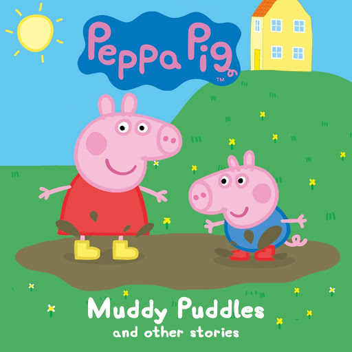
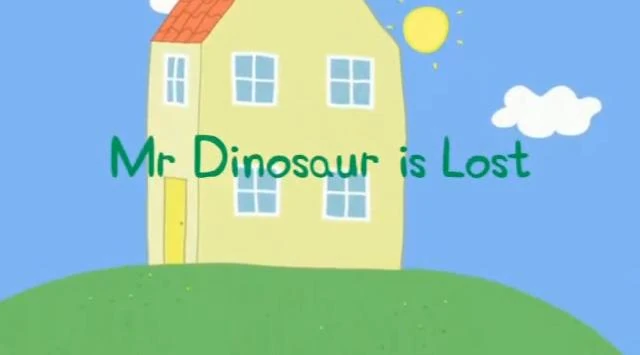

Muddy Puddles
"Peppa Pig," a beloved children's animated television series, was first released in the year 2004. The show was created and directed by Neville Astley and Mark Baker. It is produced by Astley Baker Davies, a British animation studio known for its work on various children's programs.
This content was created with the help of A.I.

It's raining and Peppa is sad because she can't go outside. When the rain stops, Peppa and George get to play one of their favorite games - jumping in muddy puddles. Things get very muddy indeed when Mummy and Daddy Pig join in. Cited
Mr Dinosaur is Lost
"Peppa Pig," a beloved children's animated television series, was first released in the year 2004. The show was created and directed by Neville Astley and Mark Baker. It is produced by Astley Baker Davies, a British animation studio known for its work on various children's programs.
This content was created with the help of A.I.

Mr. Dinosaur is George's favorite toy. When Mr Dinosaur goes missing, George is upset. Daddy Pig helps Peppa to become a detective and together they track down Mr. Dinosaur, making George a very happy little piggy again. Cited